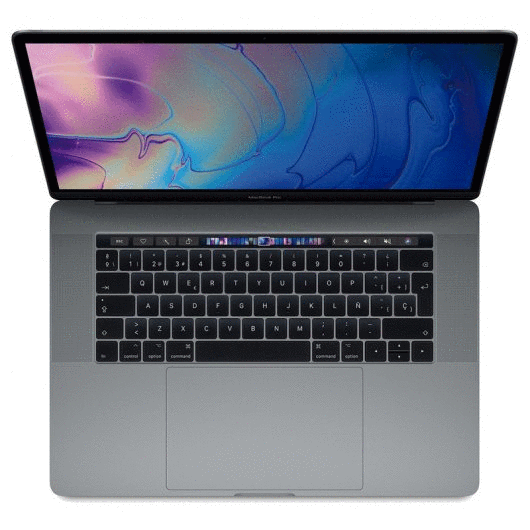
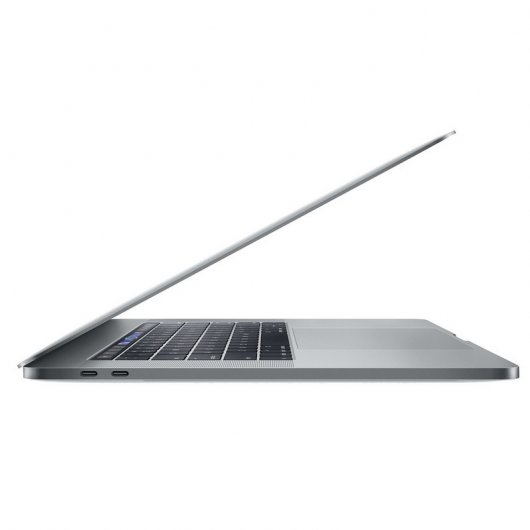
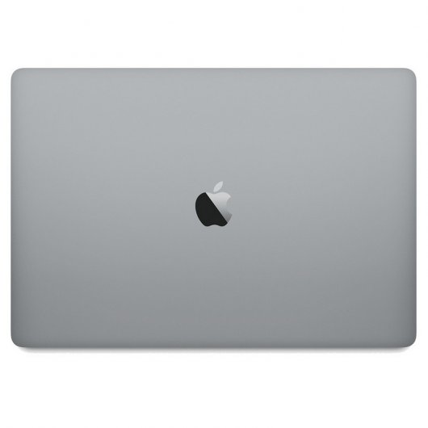

FUTURETECH STORE |
|    |
Apple Macbook Pro 13"
1806,59€
Ya está aquí lo nuevo de Apple, el nuevo MacBook Pro. Es más rápido y potente que antes, pero más fino y ligero que nunca. Tiene la pantalla con más color y brillo jamás vista en un portátil Mac. Y estrena la Touch Bar, una barra de vidrio Multi-Touch integrada en el teclado para que siempre tengas a mano las herramientas que necesitas. El nuevo MacBook Pro es el resultado de nuestras ideas más innovadoras. Y está a punto de hacer realidad las tuyas.
Características
Una revolución en la forma de usar tu Mac. La Touch Bar (Disponible sólo en algunos modelos)pone a tu disposición las herramientas que necesitas justo cuando las necesitas, porque cambia automáticamente según lo que hagas. Tú solo notarás que trabajas más rápido y mejor.2 Además, todo lo que aparece en la Touch Bar te resultará tan familiar que sabrás usarla desde el minuto uno. Con un toque puedes elegir atajos, sugerencias de texto y cosas que ni te imaginas. Muévete por la línea de tiempo de un vídeo a pantalla completa o toca para recorrer tus colecciones de fotos y editarlas. Pero no acaban aquí las novedades, porque Touch ID está disponible por primera vez en un Mac. Ahora, por ejemplo, iniciarás sesión en tus cuentas al instante.
Touch ID llega al Mac. Ahora puedes desbloquear el Mac, acceder a los ajustes del sistema, abrir notas protegidas y hasta cambiar de usuario. Todo con solo mover un dedo.
Para tus apps favoritas. Y las que vendrán. La Touch Bar cambia tu forma de usar las apps que más te gustan. Todas, no solo las de Apple. Es un espacio dinámico que permite a los desarrolladores añadir una nueva dimensión a las apps de hoy y de mañana.
Muy pro. En cualquier profesión. El nuevo MacBook Pro redefine el significado de potencia y portabilidad. Da igual dónde te pille la inspiración: con procesadores de alto rendimiento, gráficos avanzados y almacenamiento de última generación, podrás dar forma a cualquier idea en tiempo récord.
Brillo y color nunca vistos en la pantalla de un portátil Mac. La nueva pantalla del MacBook Pro es la mejor que jamás haya tenido un portátil Mac. Al aumentar el brillo de la retroiluminación por LED y el contraste, hemos logrado unos negros más intensos y unos blancos más luminosos. Y como tiene mayor apertura de píxeles y una velocidad de actualización variable, consume menos que los modelos de generaciones anteriores. Además es el primer portátil Mac compatible con la gama cromática amplia, que multiplica los matices de verdes y rojos. Por eso las imágenes se ven como en la vida real y con todo lujo de detalles. Esta pantalla es el sueño de los editores de vídeo y diseñadores gráficos.
Altavoces que hablan por sí mismos. Y bien alto. Han rediseñado por completo los altavoces para que ofrezcan el doble de rango dinámico y hasta un 58 % más de volumen, con unos bajos 2,5 veces más potentes. Y como están conectados directamente a la alimentación del sistema, alcanzan hasta el triple de potencia máxima. El MacBook Pro es la mejor opción para mezclar música, editar vídeos o ver películas, estés donde estés. Como lo oyes.
Más precisión en el teclado. Más espacio en el trackpad. Trabajar con el nuevo MacBook Pro es un auténtico gustazo. El teclado incluye nuestro nuevo mecanismo de mariposa de segunda generación, que mejora la comodidad y la velocidad de respuesta al escribir. Y como ahora el trackpad Force Touch es mucho más amplio, tienes espacio de sobra para todos tus gestos y clics.
El puerto más potente y versátil que existe. Thunderbolt 3 combina su increíble ancho de banda con la versatilidad del estándar USB?C para crear un puerto universal que alcanza velocidades de vértigo, hasta 40 Gb/s para ser exactos. Ofrece transferencia de datos, carga y salida de vídeo en un único conector con el doble de ancho de banda que la generación anterior. Ambos tamaños del MacBook Pro están disponibles con dos puertos a cada lado para que elijas el que mejor te venga en cada momento. Puedes conectar sin problemas los dispositivos que ya tengas con un cable o adaptador. Y como el puerto Thunderbolt 3 es reversible, no importa cómo lo conectes. Siempre acertarás.
La razón de que no haya nada como el Mac. Detrás de cada Mac está la potencia de macOS. Está diseñado para aprovechar al máximo todas las posibilidades del hardware y para ser tan bonito como intuitivo. Por supuesto, le acompaña una extraordinaria colección de apps que usarás a todas horas. Y viene con iCloud y otras opciones para que tu Mac, dispositivos iOS y Apple Watch trabajen juntos a la perfección.
Especificaciones
Procesador Intel® Core i5 (2.3Ghz a 3,8 Ghz 4 MB)
Memoria RAM 8GB LPDDR3
Disco duro 256 GB (SSD PCIe integrado)
Display 13.3" LED Retina HD (2560 x 1600) 16:9 IPS
Controlador gráfico Intel Iris Plus Graphics 655
Conectividad
WiFi 802.11 AC
Bluetooth V5 High Speed
Cámara de portátil Sí
Micrófono Sí
Batería 76W Integrada de polimeros de litio con hasta 10 de autonomía
Conexiones
4 x ThunderBolt 3
1 x Auriculares
Lector de Tarjetas 3 en 1 (SD, SDHC, MMC)
Sistema operativo MacOS Sierra
Dimensiones (Ancho x Profundidad x Altura) 304.1 x 212.4 x 14.9 mm
Peso 1.37 kg
Color Plata
|


{kind=link}
{kind=link}
{kind=link}